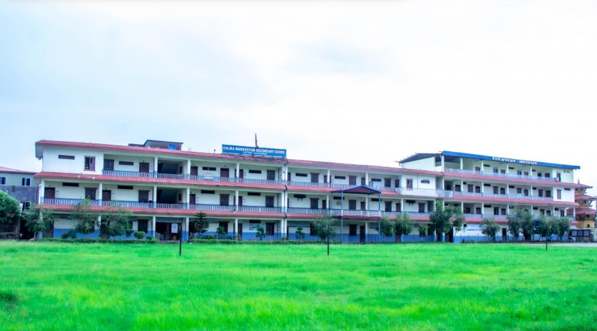

I had study this Deep Boarding High School from class LKG to Class 6.It is a nice school provided with best teacher and good hospitality for the student.I enjoy both learning and extra activities in this school.It is one of the best school for student who need to be guided and cared.

Kalika Manavgyan Secondary School
Butwal,Kalikanagar
I had study this school from class 7 to class 12.It was a better school for me because i have to struggle very hard in this school because this school make you learn from inside of you with no much guidance and cared from the teachers, it is not their mistake but due to very high number of students studying there. If you loss there then it is very hard to find yourself forward due to the competative environment and lack of confidence but the good thing is that if you begin to shine there from initial phase then you will go on shining at last.In this school you yourself is your mentor.No one is going to show you mercy until you posess something extraordinary
Butwal Multiple Campus
Butwal,Golpark
This is a good college upto my experience. Here you can find peaceful environment and as well as learning.It is also a government school so you cannot aspect all from it. Here you can get mercy and guidance by the seniors